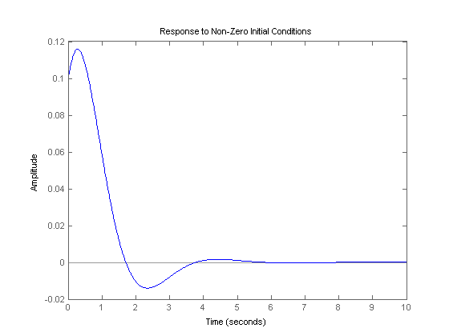
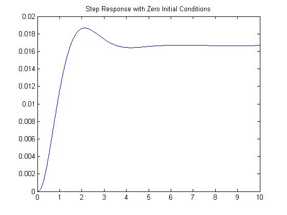
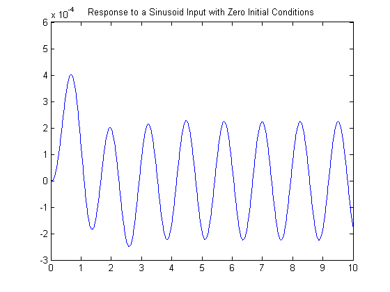

Extras: Simulating Linear Systems (using the lsim command)
The lsim command is quite similar to the step command (actually, the step command is just a special case of lsim). Given a system described as an LTI object, the lsim command can run a simulation of the system using arbitrary inputs and initial conditions.
The command lsim(sys,U,T,X0) plots the time response of a linear time-invariant system. This system can be continuous or discrete. For a continuous-time system, the differential equation is integrated from time T(0) to T(length(T)), starting at the initial condition X0 and using the input U. The input vector must have the same number of entries as the time vector. If the initial conditions are all zero, X0 may be omitted.
For a discrete-time system, U should be sampled at the same rate as the system (T is then redundant and may be omitted or set to the empty matrix, i.e. [ ]).
Suppose we have a continuous-time system described by the following A, B, C, and D matrices.
A = [-20 -40 -60
1 0 0
0 1 0];
B = [1
0
0];
C = [0 0 1];
D = 0;
As you can see from the dimensions of the matrices, this system has three states, one input, and one output. Let's say we want to plot the response of the system with a non-zero initial condition and no input. This can be done in the following manner.
T = 0:0.01:10; % simulation time = 10 seconds U = zeros(size(T)); % no input X0 = [0.1 0.1 0.1]; % initial conditions of the three states sys = ss(A,B,C,D); % construct a system model lsim(sys, U, T, X0) % simulate and plot the response (the output) title('Response to Non-Zero Initial Conditions')
When the lsim command is invoked with left-hand arguments,
[Y, Tsim, X] = lsim(sys,U,T);
no plot is drawn on the screen. MATLAB returns the output and state time history in the matrices Y and X respectively. In general, Tsim is the same as T. However, in some cases, T is resampled when intersample oscillations occur. Then, Tsim is the time actually used in simulation. The matrix Y has as many columns as there are outputs and has length(Tsim) rows. X has as many columns as there are states and has length(Tsim) rows. The plot command can then be used to plot the response. Note that X can be omitted.
Now let's plot the step response for the system given above; the input U is 1 for all positive time, and let the initial conditions be zero.
T = 0:0.01:10; % simulation time = 10 seconds U = ones(size(T)); % u = 1, a step input sys = ss(A,B,C,D); % construct a system model [Y, Tsim, X] = lsim(sys,U,T); % simulate plot(Tsim,Y) % plot the output vs. time title('Step Response with Zero Initial Conditions')
The plot above shows the step response of the system. We can also plot the response of the system to any other input that we choose. For example, we can simulate the system's response to a sinusoidal input, say u(t) = 0.1 sin(5 t + 1), employing the code given below.
T = 0:0.01:10; % simulation time = 10 seconds U = 0.1*sin(5*T+1); % input as a function of time sys = ss(A,B,C,D); % construct a system model [Y, Tsim, X] = lsim(sys,U,T); % simulate plot(Tsim,Y) % plot the output vs. time title('Response to a Sinusoid Input with Zero Initial Conditions')
Remember that the steady-state response of a linear system to a sinusoidal input will always be a sinusoid of the same frequency but with a different magnitude and phase. The response shown above is consistent with this fact.
The lsim command also works with other LTI objects, such as in transfer function form (continuous or discrete). Running the following code will generate the same response found above.
T = 0:0.01:10;
U = 0.1*sin(5*T+1);
num=1;
den=[1 20 40 60];
sys_tf = tf(num,den);
lsim(sys_tf,U,T);
Because any transfer function can be represented using many different sets of state-space matrices, you can only simulate a system in transfer function form with zero initial conditions (and cannot obtain the state trajectories); see the conversions page for more details.
The response of linear systems to arbitrary inputs can also be generated from within the LTI Viewer.